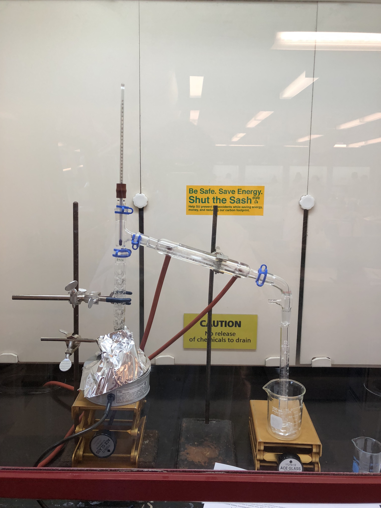

Here are a few of the experiements I've worked on:

Column Chromatography Setup
This is a common method used to separate and purify solids and liquids for further analysis.

Distillation Experiment Setup
Distillation is a method used to identify and purify organic compounds via boiling and condensation.